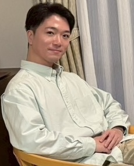
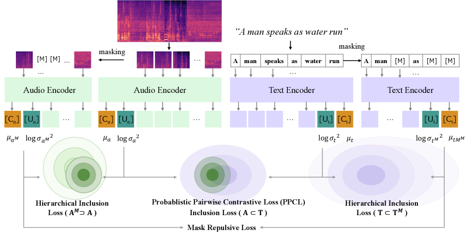
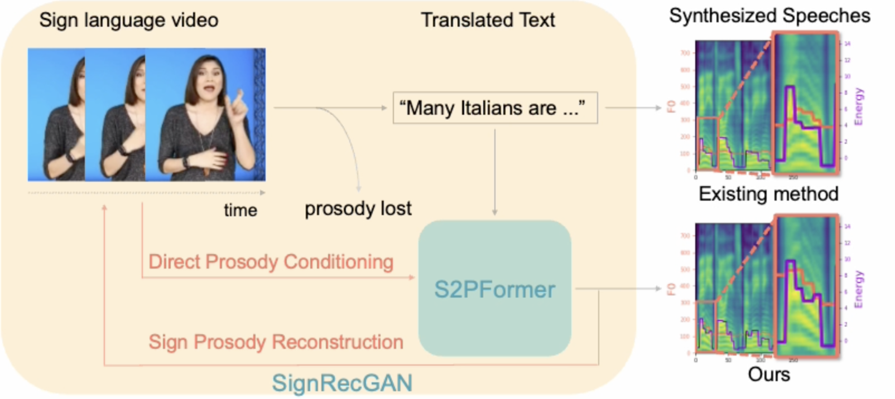
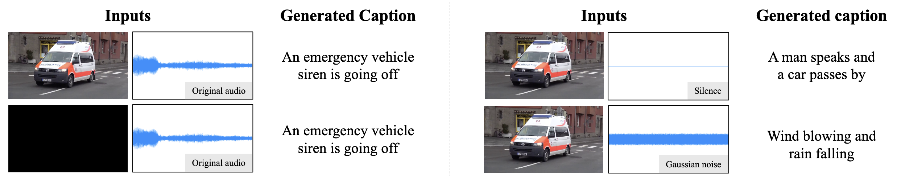

Aug 2025
MIRU Student Encouragement Award at MIRU 2025 (The 28th Meeting on Image Recognition and Understanding).

I am a master's student at Aoki Lab, Keio University, advised by Prof. Yoshimitsu Aoki.
My research interests include multimodal learning, representation learning, and motion / gesture generation.
Bold = me. * = equal contribution.


